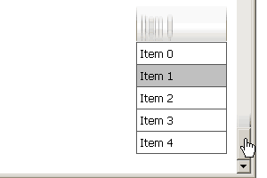

| CONTEXT HELP |
|---|
| Static Positioning |
|
 When this feature is activated menu doesn't scroll with the content of the page but stays at the same distance from the edge of the browser window. Menu can be configured to ignore vertical scrolling, horizontal scrolling or both. |